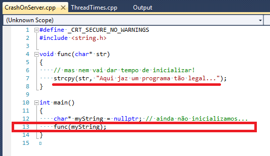

- Coders at Work: Reflections on the Craft of Programming
- Depuração de emergência: receita de bolo
- Vida e Software
# Coders at Work: Reflections on the Craft of Programming
Caloni, 2011-10-14 <books> <computer> <interview [up] [copy]"Personally I have never believed that it is possible to be a good coder without being a good programmer nor a good programmer without being a good designer, communicator, and thinker." - Jamie Zawinski
Como Joel e Atwood disseram, a leitura de Coders At Work é tão útil quanto ler o código dos outros, só que em um estilo mais condensado, que se aproveita das décadas de experiência dessa gente para aprimorarmos nossos processos de desenvolvimento e, muitas vezes, a forma de pensarmos sobre software.
No meu estilo de leitura circular, adaptada do brilhante (maluco?) método de Dmitry Vostokov, as coisas vão mais devagar, e estou apenas no início do livro, tendo passado por Jamie Zawinski (desenvolvedor da equipe original do Netscape), Brad Fitzpatrick (criador do Live Journal) e terminado recentemente Douglas Crockford. O artigo de Joel sobre Zawinski demonstra seu apreço pelo codificador pensante, ou aquele que faz as coisas acontecerem e não fica preso eternamente na armadilha da arquitetura. Eu acredito que as seguintes passagens do livro demonstram seu pensamento melhor do que se eu fosse tentar traduzi-los, começando por Jamie Zawinski:
Personally I have never believed that it is possible to be a good coder without being a good programmer nor a good programmer without being a good designer, communicator, and thinker. (...) Start converting it into the bad one until it stops working. That's primary tool of reverse engineering. (...) Your competitor's six-month 1.0 has crap code and they're going to have to rewrite it in two years but, guess what: they can rewrite it because you don't have a job anymore. (...) The design process is definitely an ongoing thing; you never know what the design is until the program is done. So I prefer to get my feet wet as early as possible; get something on the screen so I can look at it sideways.(...) I've noticed that one thing that separates good programmers from bad programmers is that good programmers are more facile at jumping between layers of abstraction they can keep the layers distinct while making changes and choose the right layer to make changes in. (...) I think one of the most important things, for me anyway, when building something from the ground up like that is, as quickly as possible, getting the program to a state that you, the programmer, can use it. Even a little bit. Because that tells you where to go next in a really visceral way. (...) I don't want to be a mathematician but I'm not going to criticize someone who is a mathematician. It's weird that people often confuse those two pursuits. People who are into very theoretical computer science are thought of in this same way as people who are shipping desktop applications. And they don't really have a lot to do with each other. (...) Then there was another book that everybody thought was the greatest thing ever in that same period'Design Patterns'which I just thought was crap. It was just like, programming via cut and paste. Rather than thinking through your task you looked through the recipe book and found something that maybe, kinda, sorta felt like it, and then just aped it. That's not programming; that's a coloring book. (...
De certa forma, o mesmo pragmatismo pode ser observado em Douglas Crockford, que utiliza o método de leitura de código tanto na entrevista por candidatos ("traga-me o código que tem orgulho de ter escrito e explique-o pra mim") quanto no dia-a-dia do projeto, para que todos entendam e aproveitem a evolução do projeto como um todo, além de constituir, na minha visão, uma das melhores dicas de auto-management que uma equipe de programadores poderia ter.
One of the things I've been pushing is code reading. I think that is the most useful thing that a community of programmers can do for each other'spend time on a regular basis reading each other's code. There's a tendency in project management just to let the programmers go off independently and then we have the big merge and then we have the big merge and if it builds then we ship it and we're done and we forget about it. One of the consequences of that is that if you have weak or confused programmers you're not aware of their actual situation until much too late. And so the risks to the project, that you're that you're going to have to build with stuff that's bad and the delays that that causes, that's unacceptable. The other thing is that you may have brilliant programmers on the project who are not adequately mentoring the other people on the team. Code reading solves both of those problems.
Can you talk a bit about how you conduct a code reading?
At each meeting, someone's responsible for reading their code, and they'll walk us through everything, and the rest of us will observe. It's a really good chance for the rest of the team to understand how their stuff is going to have to fit with that stuff.
We get everybody around the table; everybody gets a stack of paper. We also blow it up on the screen. And we all read through it together. And we're all commenting on the code as we go along. People say, 'I don't understand this comment,' or, 'This comment doesn't seem to describe the code.' That kind of stuff can be so valuable because as a programmer you stop reading your own comments and you're not aware that you're misdirecting the reader. Having the people you work with helping to keep your code clean is a huge service'you find defects that you never would've found on your own.
I think an hour of code reading is worth two weeks of QA. It's just a really effective way of removing errors. If you have someone who is strong reading, then the novices around them are going to learn a lot that they wouldn't be learning otherwise, and if you have a novice reading, he's going to get a lot of really good advice.
So if you don't clean up every seventh cycle you may be faced with the choice of whether or not to do a big rewrite. How do you know when, if ever, it's time for a big rewrite?
Generally the team knows when it's time. Management finds out a lot later. The team is getting beat up pretty regularly, making too many pretty regularly, making too many bugs; the code's too big, it's too slow; we're falling behind. They know why. It's not because they became stupider or lazier. It's because the code base is no longer serving the purpose that it needs to.
Esse pequeno trecho da entrevista de Brendan Eich, de Coders at Work, revela parte das frustações que os programadores de linha de frente sofrem com os ambientes de depuração, muitas vezes aquém dos desafios atuais. Sinceramente, não sinto isso em meu dia-a-dia, e acho o Visual Studio um excelente depurador com interface (mas que perde feio para o WinDbg em casos mais hardcore). Porém, fica a percepção curiosa do criador do JavaScript.
Proofs are hard. Most people are lazy. Larry Wall is right. Laziness should be a virtue. So that's why I prefer automation. Proofs are something that academics love and most programmers hate." - Brendan Eic
SGI:
Diagnosing it was hard because it was timing-sensitive. It had to do with these machines being abused by terminal concentrators. People were hooking up a bunch of PTYs to real terminals. Students in a lab or a bunch of people in a mining software company in Brisbane, Australia in this sort of '70s sea of cubes with a glass wall at '70s sea of cubes with a glass wall at the end, behind which was a bunch of machines including the SGI two-processor machine. That was hard and I'm glad we found it. These bugs generally don't linger for years but they are really hard to find. And you have to sort of suspend your life and think about them all the time and dream about them and so on. You end up doing very basic stuff, though. It's like a lot of other bugs. You end up bisecting'you know 'wolf fence.' You try to figure out by monitoring execution and the state of memory and try to bound the extent of the bug and control flow and data that can be addressed. If it's a wild pointer store then you're kinda screwed and you have to really start looking at harder-to-use tools, which have only come to the fore recently, thanks to those gigahertz processors, like Valgrind and Purify.
Ferramentas de Depuração Avançadas:
Instrumenting and having a checked model of the entire memory hierarchy is big. Robert O'Callahan, our big brain in New Zealand, did his own debugger based on the Valgrind framework, which efficiently logs every instruction so he can re-create the entire program state at any point. It's not just a time-traveling debugger. It's a full database so you see a data structure and there's a field with a scrogged value and you can say, 'Who wrote to that last?' and you get the full stack. You can reason from effects back to causes. Which is the whole game in debugging. So it's very slow. It's like a hundred times slower than real time, but there's hope.
Or you can use one of these faster recording VMs'they checkpoint only at system call and I/O boundaries. They can re-create corrupt program states at any boundary but to go in between those is harder. But if you use that you can probably close in quickly at near real time and then once you get to that stage you can transfer it into Rob's Chronomancer and run it much slower and get all the program states and find the bug.
Depuradores da Indústria:
Debugging technology has been sadly underresearched. That's another example where there's a big gulf between industry and academia: the academics are doing proofs, sometimes by hand, more and more mechanized thanks to the POPLmark challenge and things like that. But in the real world we're all in debuggers and they're pieces of shit from the '70s like GDB.
Yeah. So I use GDB, and I'm glad GDB, at least on the Mac, has a watch-point facility that mostly works. So I can watch an address and I can catch it changing from good bits to bad bits. That's pretty helpful. Otherwise I'm using printfs to bisect. Once I get close enough usually I can just try things inside GDB or use some amount of command scripting. But it's incredibly weak. The scripting language itself is weak. I think Van Jacobson added loops and I don't even know if those made it into the real GDB, past the FSF hall monitors.
Multithreading:
But there's so much more debugging can do for you and these attempts, like Chronomancer and Replay, are good. They certainly changed the game for me recently. But I don't know about multithreading. There's The multithreaded stuff, frankly, scares me because before I was married and had kids it took a lot of my life. And not everybody was ready to think about concurrency and all the possible combinations of orders that are out there for even small scenarios. Once you combine code with other people's code it just gets out of control. You can't possibly model the state space in your head. Most people aren't up to it. I could be like one of these chestthumpers on Slashdot'when I blogged about 'Threads suck' someone was saying, 'Oh he doesn't know anything. He's not a real man.' Come on, you idiot. I got a trip to New Zealand and Australia. I got some perks. But it was definitely painful and it takes too long. As Oscar Wilde said of socialism, 'It takes too many evenings.
E isso é tudo que guardarei deste livro. Talvez o revisite daqui a algumas décadas para comparar os novos tempos que viveremos.
In the real world one big split is between people who use symbolic debuggers and people who use print statements. - Peter Seibe
# Depuração de emergência: receita de bolo
Caloni, 2011-10-18 <computer> [up] [copy]Continuando o papo sobre o que fazer para analisar rapidamente um crash no servidor com o pacote WinDbg, na maioria das vezes a exceção lançada pelo processo está diretamente relacionada com um acesso indevido à memória, o que tem diversas vantagens sobre problemas mais complexos:
* Possui localização precisa de onde ocorreu a violação (inclusive com nome do arquivo-fonte e linha).
* Não corrompe a pilha (ou, se corrompe, não chega a afetá-la a ponto da thread ficar irreconhecível).
* A thread que contém a janela de crash é a culpada imediata (basta olha a pilha!).
Bom, resumindo: basta olhar a pilha! Mas, para isso ser efetivo, precisaremos do PDB do executável que gerou o crash, pois através dele é possível puxar a tal localização da violação de acesso.
Se você mantiver executável (DLL também é executável) juntinho com seu PDB, sua vida será mais fácil e florida.
Mesmo que, em alguns momentos trágicos, apareça uma tela indesejada.

Seu caminho a partir dessa tela pode ser analisar um dump gerado (visto no artigo anterior) ou podemos atachar o WinDbg diretamente no processo (visto aqui e agora):

WinDbg: "mas que bagunça é essa na memória desse processo?"
O comando mais útil na maioria dos casos é mostrar a pilha em modo verbose (kv e enter). Porém, antes disso, precisamos:
1. Ajeitar o path dos símbolos.
2. Recarregar o PDB do executável suspeito.
3. Mostrar a pilha de todas as threads (até descobrir a culpada).
Todos esses comandos podem ser vistos abaixo. São, respectivamente, .symfix, .reload e novamente o kv (mas para todas threads).
0:001> .symfix
0:001> .reload /f CrashOnServer.exe
*** WARNING: Unable to verify checksum for C:\Users\wanderley.caloni\Documents\Projetos\Caloni\Posts\Debug\CrashOnServer.exe
0:001> kv
Child-SP RetAddr : Args to Child : Call Site
0030f918 77679198 : 00000000`00000000 `00000000 : ntdll!DbgBreakPoint
0030f920 775e244d : 00000000`00000000 `00000000 : ntdll!DbgUiRemoteBreakin+0x38
0030f950 00000000 : 00000000`00000000 `00000000 : ntdll!RtlUserThreadStart+0x25
0:001> ~* kv
0 Id: 1dc.978 Suspend: 1 Teb: 00000000`7efdb000 Unfrozen
Child-SP RetAddr : Args to Child : Call Site
0008ea48 751f282c : 00000000`77770190 00000000`001dfb50 : wow64cpu!CpupSyscallStub+0x9
0008ea50 7526d07e : 00000000`00000000 00000000`775b3501 : wow64cpu!WaitForMultipleObjects32+0x32
0008eb10 7526c549 : 00000000`00000000 00000000`7ffe0030 : wow64!RunCpuSimulation+0xa
0008eb60 775cae27 : 00000000`003b3710 00000000`7efdf000 : wow64!Wow64LdrpInitialize+0x429
0008f0b0 775c72f8 : 00000000`00000000 00000000`00000000 : ntdll!LdrpInitializeProcess+0x1780
0008f5b0 775b2ace : 00000000`0008f670 00000000`00000000 : ntdll! ?? ::FNODOBFM::`string'+0x2af20
0008f620 00000000 : 00000000`00000000 00000000`00000000 : ntdll!LdrInitializeThunk+0xe
Ops! Estamos rodando um processo 32 dentro de um SO 64 (Windows 7, por exemplo). Isso pode acontecer. Seguimos com o workaround .load wow64exts e .effmach x86:
0:001> .load wow64exts
0:001> .effmach x86
Effective machine: x86 compatible (x86)
0:001:x86> ~* kv
0 Id: 1dc.978 Suspend: 1 Teb: 7efdb000 Unfrozen
ChildEBP RetAddr Args to Child
001df24c 761a0bdd 00000002 001df29c 00000001 ntdll_77760000!NtWaitForMultipleObjects+0x15 (FPO: [5,0,0])
001df2e8 7727162d 001df29c 001df310 00000000 KERNELBASE!WaitForMultipleObjectsEx+0x100 (FPO: [Non-Fpo])
001df330 77271921 00000002 7efde000 00000000 KERNEL32!WaitForMultipleObjectsExImplementation+0xe0 (FPO: [Non-Fpo])
001df34c 77299b2d 00000002 001df380 00000000 KERNEL32!WaitForMultipleObjects+0x18 (FPO: [Non-Fpo])
001df3b8 77299bca 001df498 00000001 00000001 KERNEL32!WerpReportFaultInternal+0x186 (FPO: [Non-Fpo])
001df3cc 772998f8 001df498 00000001 001df468 KERNEL32!WerpReportFault+0x70 (FPO: [Non-Fpo])
001df3dc 77299875 001df498 00000001 38239b1e KERNEL32!BasepReportFault+0x20 (FPO: [Non-Fpo])
001df468 777d0df7 00000000 777d0cd4 00000000 KERNEL32!UnhandledExceptionFilter+0x1af (FPO: [Non-Fpo])
001df470 777d0cd4 00000000 001dfb34 7778c550 ntdll_77760000!__RtlUserThreadStart+0x62 (FPO: [SEH])
001df484 777d0b71 00000000 00000000 00000000 ntdll_77760000!_EH4_CallFilterFunc+0x12 (FPO: [Uses EBP] [0,0,4])
001df4ac 777a6ac9 fffffffe 001dfb24 001df5e8 ntdll_77760000!_except_handler4+0x8e (FPO: [Non-Fpo])
001df4d0 777a6a9b 001df598 001dfb24 001df5e8 ntdll_77760000!ExecuteHandler2+0x26
001df580 7777010f 001df598 001df5e8 001df598 ntdll_77760000!ExecuteHandler+0x24
001df584 001df598 001df5e8 001df598 001df5e8 ntdll_77760000!KiUserExceptionDispatcher+0xf (FPO: [2,0,0])
WARNING: Frame IP not in any known module. Following frames may be wrong.
001df9ac 010d141e 00000000 00000000 00000000 0x1df598
001dfa90 010d19af 00000001 00321410 00321c70 CrashOnServer!main+0x2e (FPO: [Non-Fpo]) (CONV: cdecl)
[c:\users\wanderley.caloni\documents\projetos\caloni\posts\crashonserver\crashonserver.cpp @ 13]
001dfae0 010d17df 001dfaf4 77273677 7efde000 CrashOnServer!__tmainCRTStartup+0x1bf (FPO: [Non-Fpo]) (CONV: cdecl)
[f:\dd\vctools\crt_bld\self_x86\crt\src\crtexe.c @ 555]
001dfae8 77273677 7efde000 001dfb34 77799f02 CrashOnServer!mainCRTStartup+0xf (FPO: [Non-Fpo]) (CONV: cdecl)
[f:\dd\vctools\crt_bld\self_x86\crt\src\crtexe.c @ 371]
001dfaf4 77799f02 7efde000 6b3e1b48 00000000 KERNEL32!BaseThreadInitThunk+0xe (FPO: [Non-Fpo])
001dfb34 77799ed5 010d1109 7efde000 00000000 ntdll_77760000!__RtlUserThreadStart+0x70 (FPO: [Non-Fpo])
001dfb4c 00000000 010d1109 7efde000 00000000 ntdll_77760000!_RtlUserThreadStart+0x1b (FPO: [Non-Fpo])
# 1 Id: 1dc.1b0 Suspend: 1 Teb: 7efd8000 Unfrozen
ChildEBP RetAddr Args to Child
0056ffe8 00000000 00000000 00000000 00000000 ntdll_77760000!RtlUserThreadStart (FPO: [0,2,0])
Nosso depurador favorito acusa uma pilha que contém a função WerpReportFault (Web Error Report, mas qualquer outra função com Exception no meio seria uma candidata). E, nessa mesma thread, a última linha nossa conhecida está no arquivo crashonserver.cpp:13. Isso nos revela o seguinte:
E essa situação, caro leitor, é 10% de tudo o que você precisa saber sobre WinDbg para resolver, mas que já resolve 90% dos casos. Belo custo-benefício, não?
# Vida e Software
Caloni, 2011-10-22 [up] [copy]Desenvolver software está bem longe de ser uma ciência exata e muito próxima de ser uma ciência humana. Eu, pessoalmente, considero um ramo esotérico, onde vale muito mais ter a atitude de reconhecer que não temos muito controle sobre como as coisas funcionam do que querer ter as rédeas de algo desgovernado.
Não sei bem o motivo. Talvez por existirem muitas camadas o software não consegue ser normalizado como as propriedades físicas dos blocos que montam um prédio ou um transatlântico. Ou simplesmente existem variáveis demais na própria camada da aplicação que impedem a compreensão total do problema (como sabemos se estamos dentro da Matrix? Como o software sabe se está em um ambiente virtualizado?).
Para os piores casos, o software sempre vai ter que confiar em seu ambiente e as regras, aparentemente imutáveis, que o regem. Ele precisar confiar não o exime de controlar seus próprio limites, e é aí que recai a atitude do programador, atitude essa que reflete diretamente nossa visão sobre a vida.
Já vi muitos programadores (eu me incluo) deixando o código pronto para o melhor dos mundos e dando a tarefa por concluída. Otimismo demais? Desleixo? Ou arrogância? Qualquer que seja o motivo, ele está incrustado na própria visão de vida do programador e de como ele se vê no mundo. Eu, particularmente, fico horrorizado com código assim. Não com todos, mas com os que são visivelmente importantes e que necessitam de um carinho especial. São os alicerces para outros códigos, de repente.
Outra atitude igualmente deformada é achar que o mundo vai acabar se não existirem todos os sanity checks (até os mais bizarros) em qualquer meia-dúzia de linhas. É o paranóico, que pode se dar bem no tipo de código importante já citado, mas que nunca vai conseguir entregar um projeto trivial se for baseado em libs escritas pelos outros e cujo código nunca deu uma "lida rápida". Aliás, essa mesma atitude "deu uma lida" demonstra que o pessimista pode ser ainda mais arrogante, pois acredita conseguir capturar toda a complexidade do sistema apenas lendo seu código en passant.
De uma forma ou de outra, como toda atividade humana, escrever código nos define não apenas como bons programadores, mas como bons humanos, com seu conjunto de crenças e valores. O que, de certa forma, é um bom sinal, pois melhorando como seres humanos, melhoramos como programadores. E vice-versa.
- Para quê filosofia?, por Marilena Chauí.
[2011-09] [2012-01]